What is Git?

Created by Linus Torvalds in 2005
Distributed Version Control System
Git ≠ Github
- Git is a tool
- Github is a hosting service
Github is acquired by Microsoft
Gitflow
A Popular Branching Strategy
Created by Vincent Driessen in 2010
Simple Workflow
- Master branch
- Develop branch
Cons
- Incomplete features may be released
- Introduce bugs easily
- Many merge conflicts
Gitflow Workflow
- Master branch
- Develop branch
- Feature branch
- Release branch
- Hotfix branch
Benefits
- Easy to work in parallel
- Release branch is useful to track releasable features


HubFlow
One-line commands for using Gitflow with Github created by DataSift
Demo
KTHXBYE
References
- https://datasift.github.io/gitflow/IntroducingGitFlow.html
- http://cameronmcefee.com/work/the-octocat/
- https://rubygarage.org/blog/most-basic-git-commands-with-examples